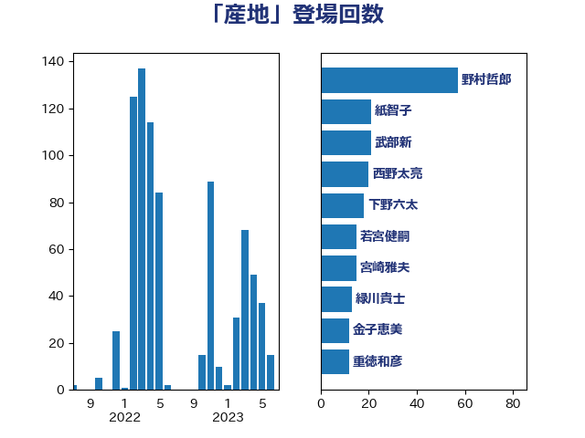

単語「産地」

| 野村哲郎 | 自由民主党 | 57 回 |
| 紙智子 | 日本共産党 | 21 回 |
| 武部新 | 自由民主党 | 21 回 |
| 西野太亮 | 自由民主党 | 20 回 |
| 下野六太 | 公明党 | 18 回 |
| 若宮健嗣 | 自由民主党 | 15 回 |
| 宮崎雅夫 | 自由民主党 | 15 回 |
| 緑川貴士 | 立憲民主党 | 13 回 |
| 金子恵美 | 立憲民主党 | 12 回 |
| 重徳和彦 | 立憲民主党 | 12 回 |
| 池畑浩太朗 | 日本維新の会 | 12 回 |
| 長友慎治 | 国民民主党 | 11 回 |
| 藤木眞也 | 自由民主党 | 11 回 |
| 岸田文雄 | 自由民主党 | 11 回 |
| 野中厚 | 自由民主党 | 8 回 |
| 角田秀穂 | 公明党 | 8 回 |
| 小山展弘 | 立憲民主党 | 6 回 |
| 勝俣孝明 | 自由民主党 | 6 回 |
| 中村裕之 | 自由民主党 | 6 回 |
| 徳永エリ | 立憲民主党 | 5 回 |
| 宮路拓馬 | 自由民主党 | 5 回 |
| 大西健介 | 立憲民主党 | 5 回 |
| 舟山康江 | 国民民主党 | 4 回 |
| 田名部匡代 | 立憲民主党 | 4 回 |
| 東国幹 | 自由民主党 | 4 回 |
| 山岡達丸 | 立憲民主党 | 4 回 |
| 小野泰輔 | 日本維新の会 | 4 回 |
| 安江伸夫 | 公明党 | 4 回 |
| 神谷裕 | 立憲民主党 | 3 回 |
| 林芳正 | 自由民主党 | 3 回 |
| 新妻秀規 | 公明党 | 3 回 |
| 庄子賢一 | 公明党 | 3 回 |
| 山田俊男 | 自由民主党 | 3 回 |
| 加藤竜祥 | 自由民主党 | 3 回 |
| 住吉寛紀 | 日本維新の会 | 3 回 |
| 伊波洋一 | 無所属 | 3 回 |
| ながえ孝子 | 無所属 | 3 回 |
| 須藤元気 | 無所属 | 2 回 |
| 金城泰邦 | 公明党 | 2 回 |
| 若林健太 | 自由民主党 | 2 回 |
| 簗和生 | 自由民主党 | 2 回 |
| 空本誠喜 | 日本維新の会 | 2 回 |
| 稲津久 | 公明党 | 2 回 |
| 福岡資麿 | 自由民主党 | 2 回 |
| 神田潤一 | 自由民主党 | 2 回 |
| 田村貴昭 | 日本共産党 | 2 回 |
| 田村まみ | 国民民主党 | 2 回 |
| 渡辺博道 | 自由民主党 | 2 回 |
| 渡辺創 | 立憲民主党 | 2 回 |
| 泉田裕彦 | 自由民主党 | 2 回 |
| 河野太郎 | 自由民主党 | 2 回 |
| 武井俊輔 | 自由民主党 | 2 回 |
| 榛葉賀津也 | 国民民主党 | 2 回 |
| 梅谷守 | 立憲民主党 | 2 回 |
| 平山佐知子 | 無所属 | 2 回 |
| 丹羽秀樹 | 自由民主党 | 2 回 |
| 三反園訓 | 無所属 | 2 回 |
| おおつき紅葉 | 立憲民主党 | 2 回 |
| 音喜多駿 | 日本維新の会 | 1 回 |
| 青山大人 | 立憲民主党 | 1 回 |
| 野間健 | 立憲民主党 | 1 回 |
| 野上浩太郎 | 自由民主党 | 1 回 |
| 遠藤良太 | 日本維新の会 | 1 回 |
| 谷合正明 | 公明党 | 1 回 |
| 西銘恒三郎 | 自由民主党 | 1 回 |
| 萩生田光一 | 自由民主党 | 1 回 |
| 若林洋平 | 自由民主党 | 1 回 |
| 羽田次郎 | 立憲民主党 | 1 回 |
| 竹谷とし子 | 公明党 | 1 回 |
| 穀田恵二 | 日本共産党 | 1 回 |
| 秋野公造 | 公明党 | 1 回 |
| 石井章 | 日本維新の会 | 1 回 |
| 江田憲司 | 立憲民主党 | 1 回 |
| 梅村聡 | 日本維新の会 | 1 回 |
| 梅村みずほ | 日本維新の会 | 1 回 |
| 徳永久志 | 無所属 | 1 回 |
| 島尻安伊子 | 自由民主党 | 1 回 |
| 岩本剛人 | 自由民主党 | 1 回 |
| 山田勝彦 | 立憲民主党 | 1 回 |
| 山崎正恭 | 公明党 | 1 回 |
| 山口那津男 | 公明党 | 1 回 |
| 山口晋 | 自由民主党 | 1 回 |
| 山下雄平 | 自由民主党 | 1 回 |
| 尾崎正直 | 自由民主党 | 1 回 |
| 小島敏文 | 自由民主党 | 1 回 |
| 小寺裕雄 | 自由民主党 | 1 回 |
| 宮下一郎 | 自由民主党 | 1 回 |
| 堤かなめ | 立憲民主党 | 1 回 |
| 堀井巌 | 自由民主党 | 1 回 |
| 北神圭朗 | 無所属 | 1 回 |
| 加藤勝信 | 自由民主党 | 1 回 |
| 冨樫博之 | 自由民主党 | 1 回 |
| 保岡宏武 | 自由民主党 | 1 回 |
| 仁木博文 | 無所属 | 1 回 |
| 五十嵐清 | 自由民主党 | 1 回 |
| 中川宏昌 | 公明党 | 1 回 |